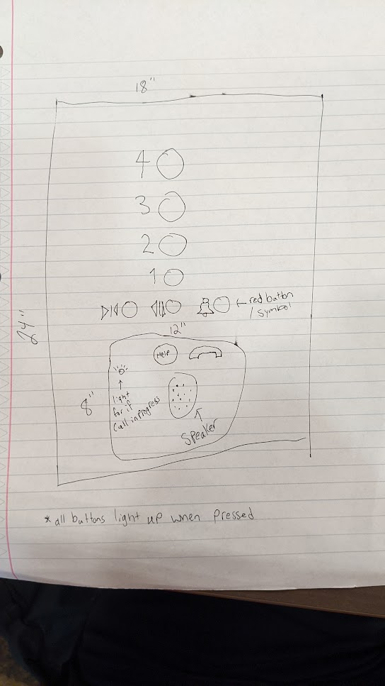

C
Elevator Gif

Issues:
All buttons are in a column
No feedback when pressing certain buttons
Why good/bad
Good:
Buttons are labeled well and in ascending order
Floor buttons light up when pressed
Help and alarm button are different color
Bad:
All buttons are in a column
No feedback when pressing certain buttons
B
Uses of an elevator:
Going to a certain floor
opening/closing door
Calling for help if problem in elevator
This interface makes common tasks easier because the floor buttons light up when pressed, though there is no feedback from the open/close door buttons
Common sequence of actions:
Enter elevator -> find button for floor -> press button -> close/hold open door
Support:
The elevator has labels on each button, numbers for floors and symbols for everything else. There is also braille next to each label.
Feedback:
The floor buttons on the elevator light up when pressed. You can also feel the buttons being fully pressed.
Common mistakes:
A common mistake could be pressing the wrong open/close door button.
Suggested improvements:
Separate the floor buttons from the open/close door and alarm buttons, have floors in 1 column and other buttons in a row at the bottom this will more clearly separate the floor buttons from the rest. Add feedback to the opening/closing buttons so people know if they are working. In my design i made them light up like the floor buttons.
Sketch with suggested imrovements

A